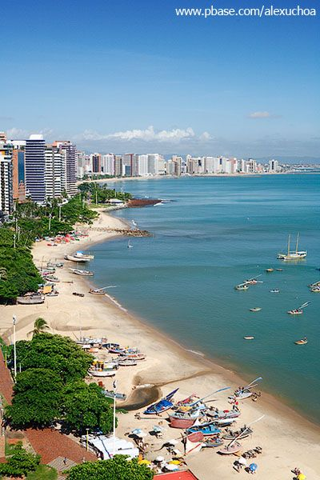

A Ponte dos Ingleses é um dos grandes símbolos de Fortaleza, e fica na Praia de Iracema. Foi construída por volta de 1920, por uma empresa da Inglaterra, de onde vem o seu nome.

Apesar do nome estranho, o Dragão do Mar é um dos mais tradicionais centros culturais da cidade, e também um dos maiores do país.
A leste da Praia de Meireles fica a de Mucuripe, que possui basicamente as mesmas características da vizinha. Mar calmo, água azul turquesa e os prédios elegantes ao fundo.
